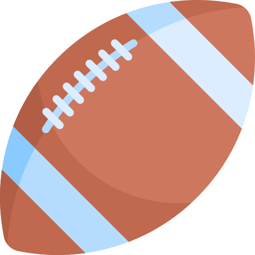

Controles para Pelota de Rugby, que esta en movimientos al azar
Genera trayectoria al azar - Ver GuiaAnimacionAlAzar.md

Genera trayectoria al azar por tiempo- Ver GuiaAnimacionAlAzar.md

Rebote infinito
;}
50% {transform: translateY(-100px);
background-color: rgb(213, 201, 131);}
100% {transform: translateY(0px);}
}")
Pelota Rugby : Usa WAAPI ( Web Animation API

Inicia con retardo 2" - Sube y luego se detiene

Aparecer - Oculto => Aparece y se queda fijo

Cambia color de fondo - Multi Etapa

Latidos infinitos
Avanza la derecha - Cambia de fondo, bordes redondeados - y repite sin parar (infinito)
Pelota Magica- rebotes en angulo ( X y Y) y luego se regresa a su posicion inicial y vuelve a repetir